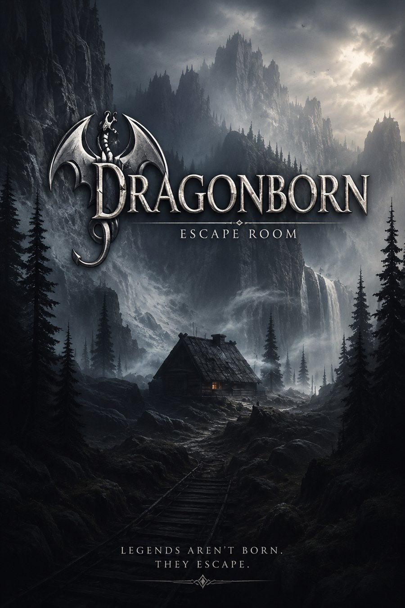

Ficha de catálogo
El hijo del posadero
Dragon Born Vitoria
Ficha de El hijo del posadero de Dragon Born Vitoria en Vitoria-Gasteiz, con datos de ubicación, duración, jugadores y enlaces de consulta.

Ficha de El hijo del posadero de Dragon Born Vitoria en Vitoria-Gasteiz, con datos de ubicación, duración, jugadores y enlaces de consulta.
Vídeo localizado en la web oficial de la sala.